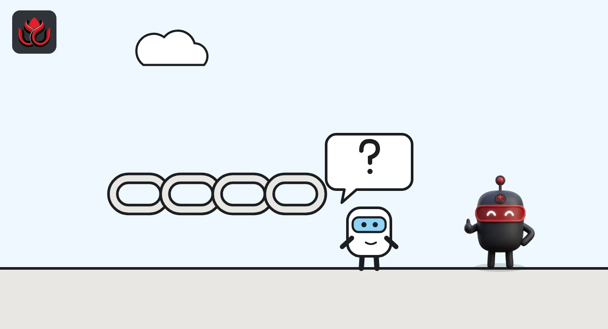
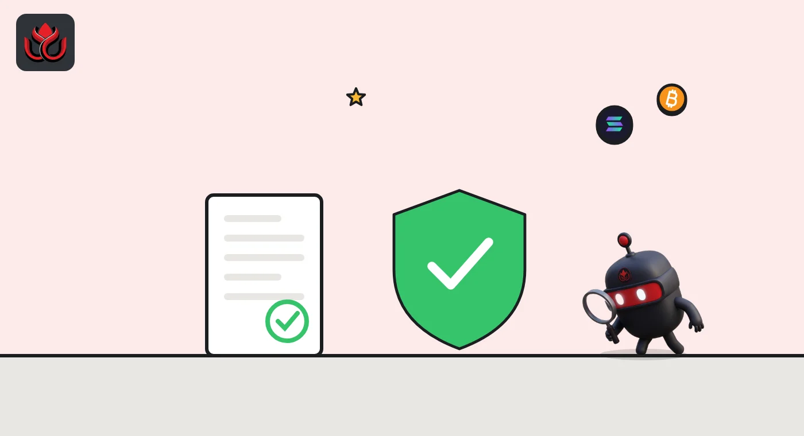

Crypto travel rule explained: what exchanges must send with your transfer
The travel rule requires crypto exchanges and other providers to send the sender's and recipient's details along with a transfer, as banks do with wires. In the EU it applies to every crypto transfer regardless of amount, and 83% of jurisdictions surveyed by the FATF have passed travel rule laws.
Key points
- The travel rule is the FATF's Recommendation 16 applied to crypto: providers must pass on identifying details about who sends and who receives a transfer.
- In the EU, Regulation (EU) 2023/1113 has applied since December 30, 2024, with no minimum amount, plus ownership checks for transfers over 1,000 euros to or from self-hosted wallets.
- In the US, the long-standing rule covers transfers of $3,000 or more, and a 2026 proposal would apply it to stablecoin issuers.
- The FATF said in July 2026 that 83% of surveyed jurisdictions have passed travel rule laws, up from 73% in 2025.
What is the crypto travel rule?
The travel rule says that when you send crypto through a regulated provider, such as an exchange, certain information about you and the person you are paying has to travel with the transfer. The receiving provider checks it on arrival. The idea is borrowed from bank wires.
It comes from the Financial Action Task Force (FATF), the global body that sets anti-money laundering standards. Its Recommendation 16 on payment transparency is "also referred to as the 'Travel Rule'" when applied to virtual assets, the FATF says. Crypto service providers are called VASPs (virtual asset service providers) in FATF language and CASPs in the EU.
Why does the travel rule exist?
Blockchains show addresses, not names. Without the travel rule, an exchange receiving funds would know which address sent them but not who stands behind it. Passing identity data between regulated providers lets them screen for sanctioned people and trace stolen or criminal money when law enforcement asks.
The FATF's July 2026 report gives a sense of the scale. It describes a Cambodia-based financial services conglomerate that laundered at least $4 billion from 2021 to 2025 for organized fraud and North Korea-linked cyber theft, the FATF said. It also flagged a group with criminal links that was building its own stablecoin designed to resist freezing and seizure, and said countries still struggle with offshore crypto providers.

What information has to be sent?
The EU law gives the clearest list. Under Article 14 of Regulation (EU) 2023/1113, the sender's provider must make sure a crypto transfer carries:
- About the sender: name, blockchain address and crypto account number where used, and either their address with country, official ID number and customer number, or their date and place of birth.
- About the recipient: name, blockchain address and account number where used.
- A legal entity identifier for either side, if one was provided.
The recipient's provider must have procedures to detect whether the information is missing, and must verify the recipient's details before making the crypto available.
How does the travel rule work in the EU?
The EU rule was adopted on May 31, 2023, and has applied since December 30, 2024, according to EUR-Lex. There is no minimum amount: the law says crypto transfers should face the same requirements "regardless of their amount."
Self-hosted wallets, the ones you control yourself, get special treatment. For a transfer of more than 1,000 euros to or from a self-hosted address, the provider must assess whether that address is owned or controlled by its own customer.
The European Banking Authority issued travel rule guidelines on July 4, 2024, which also apply from December 30, 2024. They set out how providers should spot missing or incomplete information and what to do about it.

How does the travel rule work in the US?
The US rule is older and built for traditional money transfers. It covers transmittals of funds of $3,000 or more by financial institutions, including banks, broker-dealers and money transmitters, and requires details such as the sender's name, address and account number, the amount and the date, according to a FinCEN advisory.
Stablecoins are being added. Treasury's 2026 proposal under the GENIUS Act, issued jointly by FinCEN and OFAC, would require stablecoin issuers to keep records for transfers of $3,000 or more and pass transmittal information to other financial institutions, FinCEN's fact sheet says.
Other proposals are gone. On October 5, 2026, FinCEN withdrew a proposed rule that would have imposed recordkeeping, verification and reporting requirements on certain crypto transactions involving unhosted wallets, along with a proposal on crypto mixing, it said.
What happens if the information is missing?
Under the EU rule, the receiving provider must check incoming transfers for the required data. For transfers from a self-hosted address, it must collect and hold the sender's details itself, and for amounts over 1,000 euros check who owns the address. The EBA's guidelines set out the steps providers should take when information is missing or incomplete.
Stablecoin issuers face an extra layer in the US. Treasury's GENIUS Act proposal would require them to be able to block, freeze and reject certain transactions, including trades in the secondary market, FinCEN says. Combined with travel rule data, that gives issuers a way to act when a transfer is flagged.
How many countries enforce the travel rule?
Adoption is rising but not complete, and gaps between countries are where criminals look for weak links. In its July 2026 update, the FATF said 83% of surveyed jurisdictions have passed travel rule laws, up from 73% in 2025, and 11 more report work underway, it said. The jurisdictions it treats as materially important for crypto account for about 97% of the global market.
The FATF also warned that most identified on-chain illicit activity now involves stablecoins, and that North Korea-linked groups and terrorist financiers have increased their misuse of stablecoins since its 2025 update. FATF President Giles Thomson said: "Effective implementation of the FATF Standards can no longer be delayed."
Jurisdictions with travel rule legislation, FATF surveys
% of surveyed jurisdictions
Source: FATF, July 2026 targeted update
What is changing next?
The FATF revised Recommendation 16 in June 2025. For peer-to-peer cross-border payments above 1,000 dollars or euros, the information sent should include name, address and date of birth, and the payment chain starts with the institution that takes the customer's instruction. The changes are due to take effect by the end of 2030, the FATF says.
The revision also asks financial institutions to use new tools against fraud and errors, such as checking a recipient's account details before sending. Card payments for goods and services stay exempt from the full requirements.
For users, the travel rule shows up as extra questions. An exchange may ask for the recipient's name, ask whether a wallet is yours, or hold a transfer until missing details arrive.
LC Insight analysis
This section is our reading of the facts above, not a statement of fact.
- We think the gap between the EU and US is the practical issue. EU providers must collect data on every transfer while the US threshold sits at $3,000, so cross-border transfers can stall when one side lacks what the other requires.
- Stablecoins are where the travel rule now bites. With the FATF saying most illicit on-chain activity involves stablecoins, expect issuers and exchanges to face more data demands, not fewer.
- The US withdrawal of the unhosted wallet proposal eases pressure on self-custody at home, but EU ownership checks above 1,000 euros still apply to transfers with EU platforms.
What's next
- Final US anti-money laundering rules for stablecoin issuers under the GENIUS Act
- The FATF's next targeted update on virtual assets
- National rules to apply the revised Recommendation 16 before the end of 2030
Frequently asked questions
Does the travel rule apply to small crypto transfers?
In the EU, yes: it applies regardless of amount. In the US, the existing funds transfer rule applies to transmittals of $3,000 or more.
Does the travel rule apply to my own wallet?
In the EU, for transfers above 1,000 euros to or from a self-hosted address, the provider must assess whether you own or control that address.
Who created the crypto travel rule?
The Financial Action Task Force, through Recommendation 16, which it says is referred to as the Travel Rule when applied to virtual assets.
Did the US drop its unhosted wallet rule?
Yes. On October 5, 2026, FinCEN withdrew its proposed recordkeeping and reporting rule for certain transactions involving unhosted wallets.
Disclaimer. This article is based on public information and the sources listed below as of the update time shown. It is for information only and is not investment, legal or tax advice. Figures may change as companies and authorities publish new data.
Sources
- FATF, update to Recommendation 16 on payment transparency (June 2025)
- FATF, targeted update on virtual assets and VASPs (July 16, 2026)
- EUR-Lex, Regulation (EU) 2023/1113
- EBA, travel rule guidelines (July 4, 2024)
- FinCEN, Advisory Issue 7 on funds travel regulations
- FinCEN, fact sheet on stablecoin issuer AML/CFT proposal (April 2026)
- FinCEN, withdrawals of proposed digital asset rules (October 5, 2026)